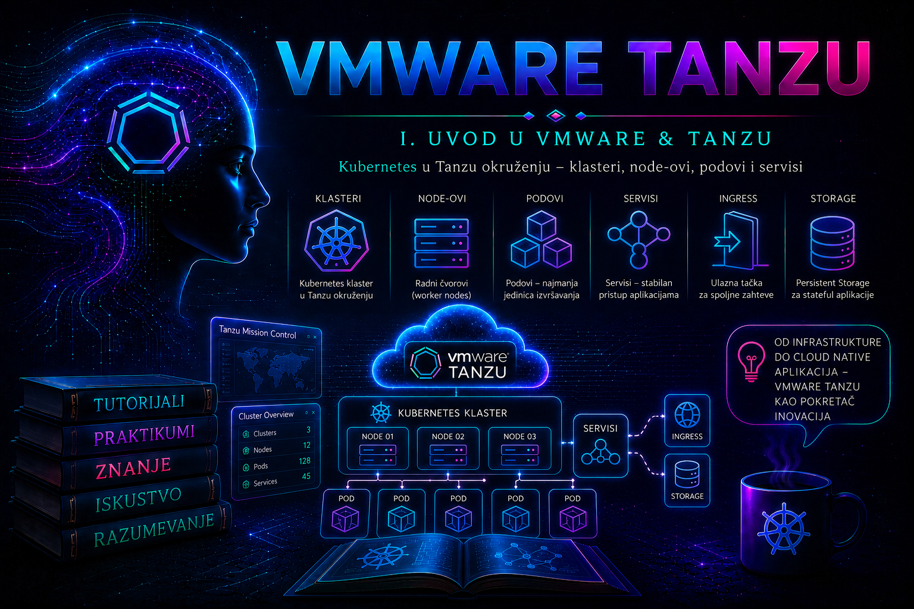

VMware & Tanzu

U prethodnim lekcijama razdvojeni su infrastrukturni, klasterski i aplikacioni sloj i pokazano je zašto se Kubernetes radna opterećenja na vSphere infrastrukturi ne smeju posmatrati kao skup virtuelnih mašina koje administrator održava ručno. Ova lekcija rešava problem koji prethodi svakoj pouzdanoj implementaciji: isti ili slični tehnički mehanizmi tokom razvoja VMware i Broadcom portfolija nosili su različite nazive, dok su pojedini nazivi označavali čitav proizvod, uslugu unutar Supervisor-a, tip klastera ili istorijsku generaciju API-ja.
Izbor arhitekture zato ne počinje pitanjem „koju YAML datoteku da primenim”, već utvrđivanjem tačnog proizvoda, izdavanja, modela potrošnje i granice odgovornosti. Izraz Tanzu klaster nije dovoljno precizan za projektnu odluku, zahtev za podršku ili incident. Administrator mora da kaže da li upravlja vSphere Supervisor-om, VKS workload klasterom koji Supervisor obezbeđuje, samostalnim Tanzu Kubernetes Grid okruženjem, istorijskim Tanzu Kubernetes Grid Integrated Edition sistemom ili drugom Tanzu komponentom.
Zašto je terminologija arhitektonska, a ne samo jezička tema
Naziv određuje dokumentaciju koju treba primeniti, API objekte koji postoje, mesto na kojem se izvršava komanda, vlasnika životnog ciklusa i podržanu putanju nadogradnje. Standardna Kubernetes komanda unutar workload klastera može ostati ista, ali način kreiranja tog klastera, izbor Kubernetes verzije, klase virtuelne mašine, mreže, storage politike i identiteta zavisi od platforme.
Terminološka greška lako postaje operativna greška. Ako se VKS node tretira kao obična VM, ručna promena CPU-a ili brisanje VM-a može biti poništeno kontrolnom petljom ili pokrenuti neželjenu zamenu node-a. Ako se dokumentacija za samostalni TKG primeni na Supervisor okruženje, administrator može tražiti nepostojeći management cluster ili koristiti alat koji nije vlasnik životnog ciklusa. Ako se izraz TKC koristi za svaki workload klaster, tim može prevideti razliku između starijeg TanzuKubernetesCluster API-ja i novijeg Cluster API modela.
Mapa naziva kroz generacije proizvoda
| Naziv | Šta označava | Administratorsko tumačenje |
|---|---|---|
| vSphere with Tanzu | Istorijski i još uvek čest naziv za mogućnost pokretanja Kubernetes i povezanih workload-a na vSphere infrastrukturi aktiviranjem Workload Management funkcionalnosti. | Ne zaključivati verziju, licencu ni API samo iz ovog naziva. |
| Workload Management | vSphere Client funkcionalnost i konfiguracioni tok kojim se omogućava Supervisor na podržanom vSphere klasteru. | Ulaz u konfiguraciju platforme, ne sinonim za korisnički workload klaster. |
| vSphere Supervisor ili Supervisor | Kubernetes zasnovan infrastrukturni i kontrolni sloj integrisan sa vSphere-om; u starijim materijalima Supervisor Cluster. | Na njemu postoje Supervisor Namespace, VM Service, Supervisor Services i resursi koji upravljaju VKS klasterima. Nije tenant workload klaster. |
| Supervisor Namespace | Granica na Supervisor-u koja povezuje tim sa kvotama, vSphere resursima, VM klasama, storage politikama, mrežama, sadržajem i dozvolama. | Nije običan namespace unutar VKS klastera; nalazi se u drugom API kontekstu i ima infrastrukturnu ulogu. |
| Tanzu Kubernetes Grid Service, TKG Service ili TKGS | Istorijski naziv Supervisor usluge za deklarativno obezbeđivanje i upravljanje Kubernetes workload klasterima. | Čest u vSphere 7/8 dokumentaciji, logovima, API nazivima i KB člancima. Nije kompletan samostalni TKG proizvod. |
| vSphere Kubernetes Service ili VKS | Aktuelni naziv usluge i workload klastera integrisanih sa Supervisor-om; standardan naziv u VCF 9 dokumentaciji. | Promena imena ne znači automatsku migraciju svakog starijeg klastera na novi API. Proveriti verziju usluge i podržane release-ove. |
| Tanzu Kubernetes cluster, TKC ili guest cluster | Stariji nazivi za workload klaster kreiran preko TKG Service-a na Supervisor-u. | U novom tekstu koristiti VKS workload klaster, a istorijski naziv pri tumačenju starije dokumentacije. |
| Tanzu Kubernetes Release ili TKr | Verzionisani, provereni skup Kubernetes komponenti i odgovarajućeg node OS image-a. | Kompatibilnost zavisi od Supervisor/VKS verzije; dostupnost image-a deo je lanca obezbeđivanja node-a. |
| Tanzu Kubernetes Grid ili TKG | Širi proizvod i distribucija za upravljanje Kubernetes klasterima u podržanim infrastrukturnim okruženjima. | TKG vodič nije podrazumevana VKS procedura samo zato što obe platforme koriste Tanzu tehnologiju. |
| TKG Integrated Edition ili TKGI | Poseban istorijski proizvod poreklom iz Enterprise PKS-a, sa BOSH/Operations Manager arhitekturom. | Nije prethodni naziv za Supervisor ili VKS; procedure pripadaju drugoj arhitekturi. |
Pravilo za dokumentaciju: pri prvom pojavljivanju navesti aktuelni naziv, a istorijski sinonim samo kada je potreban za pretragu starijih logova, API objekata ili Knowledge Base članaka: „vSphere Kubernetes Service (VKS; u starijoj dokumentaciji TKG Service/TKGS)”.
Četiri nivoa koja se najčešće pogrešno poistovećuju
- Portfolio i licencni paket. VMware Tanzu i VMware Cloud Foundation predstavljaju komercijalni i platformski kontekst. Naziv ne dokazuje koje su komponente instalirane ili licencirane.
- vSphere infrastrukturna sposobnost. Supervisor povezuje Kubernetes API sa compute, mrežnim, storage i identity mogućnostima vSphere-a.
- Usluga za klastere. VKS, odnosno istorijski TKG Service, koristi Supervisor i Cluster API kontrolere da deklarativno održava workload klastere.
- Korisnički klaster. VKS workload klaster ima sopstveni API endpoint, control plane, worker node-ove, namespace-ove i aplikacije.
Zato rečenica „ulogovala sam se u Tanzu” nije dovoljna. Administrator može biti prijavljen na Supervisor API, API konkretnog VKS workload klastera ili u vSphere Client. Svaki kontekst prikazuje druge objekte i prihvata druge operacije.
Supervisor kao infrastrukturni Kubernetes kontrolni sloj
Supervisor nije samo još jedan klaster za aplikacije. On izlaže Kubernetes API preko kojeg se vSphere resursi koriste deklarativno i održava kontrolere koji željeno stanje prevode u vCenter operacije. Supervisor Namespace povezuje korisnike sa resource pool-om, storage politikama, VM klasama, mrežama i servisima koje je platform administrator odobrio.
U zavisnosti od verzije, izdanja i instaliranih Supervisor Services mogućnosti, na Supervisor-u mogu se konzumirati VKS klasteri, virtuelne mašine preko VM Service-a, vSphere Pods u podržanim modelima i dodatni servisi. Postojanje Supervisor-a ne znači da su sve mogućnosti dostupne: zavise od konfiguracije, mrežnog modela, licence, kompatibilnosti i instaliranih servisa.
Platform administrator održava Supervisor i zavisnosti; namespace administrator konzumira dodeljene resurse; Kubernetes administrator održava VKS workload klaster; aplikacioni tim koristi namespace-ove unutar njega. Jedna osoba može imati više uloga, ali operacije ostaju odvojene odgovornosti.
VKS usluga i VKS workload klaster
Izraz VKS se koristi i za samu sposobnost i za klastere koje ona kreira. U ovoj knjizi koristićemo VKS usluga za platformske kontrolere i VKS workload klaster za korisnički Kubernetes klaster.
VKS usluga koristi deklarativne Kubernetes resurse i Cluster API obrasce. Zahtev opisuje topologiju, Kubernetes release, klase VM-ova, storage i mrežne parametre. Kontroleri na Supervisor-u kreiraju control plane i worker VM-ove, povezuju ih u klaster i neprekidno usklađuju stanje. Promene se zato izvode preko podržanog API-ja ili vSphere interfejsa, ne ručnim prepravljanjem generisanih VM-ova.
API oblik nije univerzalan kroz verzije. Starija okruženja mogu koristiti objekat TanzuKubernetesCluster iz grupe run.tanzu.vmware.com, dok noviji modeli koriste Cluster API objekte, ugrađenu ClusterClass definiciju i topologiju. Pre manifesta administrator mora izvršiti API discovery i otvoriti dokumentaciju tačno za instaliranu verziju.
VKS nije isto što i samostalni TKG
| Kriterijum | VKS na Supervisor-u | Samostalni TKG model |
|---|---|---|
| Lifecycle upravljačka ravan | Supervisor i VKS kontroleri integrisani sa vCenter-om | Management komponente i alati određeni generacijom TKG proizvoda |
| Tenant granica | Supervisor Namespace sa vSphere politikama i kvotama | Organizacioni model i infrastrukturne konfiguracije konkretnog TKG izdanja |
| Infrastrukturna integracija | Supervisor, VM Service, CNS/CSI, mrežni model i vCenter inventar | Provider komponente zavise od ciljne infrastrukture |
| Kreiranje klastera | Supervisor API, podržani VKS API/ClusterClass ili odgovarajući vSphere UI tok | Alati i API management okruženja određeni verzijom TKG-a |
| Tipičan razlog izbora | Kubernetes kao integrisana vSphere usluga | Drugi podržani infrastrukturni model ili postojeći TKG operativni standard |
Nijedan model nije „bolji” bez konteksta. VKS smanjuje broj odvojenih upravljačkih ravni kada je vSphere centralna platforma. Drugi model može biti opravdan kada organizacija ima drugačiji infrastrukturni cilj ili postojeću automatizaciju. Odluka uključuje operativnu cenu, podržanost i veštine tima, ne samo funkcionalnu listu.
Verzije, izdanja i licence: tri odvojene provere
Verzija određuje tehničke mogućnosti, API-je i kompatibilne Kubernetes release-ove. Izdanje ili solution paket određuje koje komponente ulaze u nabavljenu platformu. Licenca i entitlement određuju pravo korišćenja, distribucije i podrške. Vidljiva opcija u UI-ju nije dokaz da je konfiguracija podržana ili licencno usklađena.
U vSphere 8 dokumentaciji postoje Tanzu edition i Solution License modeli povezani sa VMware vSphere Foundation ili VMware Cloud Foundation ponudom. VCF 9 donosi objedinjeni VCF kontekst i VKS terminologiju. Pošto se komercijalna pravila menjaju nezavisno od Kubernetes API-ja, ADR treba da zabeleži izvor entitlement-a i datum provere, ali ne i neproverenu pretpostavku da funkcija pripada svakom paketu.
Minimalni verzijski zapis obuhvata: vCenter Server, ESXi/vSphere klaster, Supervisor, VKS uslugu, Kubernetes verziju workload klastera, TKr ili node image, mrežnu komponentu, CSI/VM Operator i instalirane Supervisor Services. Kombinacija se proverava u aktuelnoj interoperabilnoj matrici, release notes i upgrade vodičima.
Mreža, storage, VM klase i sadržaj
Supervisor i VKS zavise od upravljačkih, workload, ingress i servisnih opsega čiji se detalji razlikuju po verziji i modelu. Okruženje može koristiti podržano vSphere Distributed Switch umrežavanje sa load balancer rešenjem ili NSX integraciju. Izbor utiče na load balancing, segmentaciju, NetworkPolicy mogućnosti, observability, rutiranje, vlasništvo i oporavak.
Pre odluke dokazuju se nepreklapajući CIDR opsezi, DNS/NTP, MTU duž putanje, rutiranje do API i ingress endpoint-a, izlaz ka registry/content izvorima, firewall tokovi i IP kapacitet za rast i nadogradnju. Dizajn sa mestom samo za početno stanje nije produkcioni dizajn.
Supervisor Namespace ne dobija neograničen pristup infrastrukturi. Platform administrator dodeljuje storage politike, VM klase i dostupne izvore sadržaja ili node image-e.
- Storage politika određuje smeštaj i sposobnosti control plane, worker i persistent diskova. Njeno uklanjanje može blokirati skaliranje, oporavak ili nadogradnju.
- VM klasa određuje compute profil. Mora zadovoljiti minimum VKS verzije i workload, dok kvota mora pokriti topologiju i privremeni surge.
- TKr/node image platforma povezuje sa podržanom Kubernetes verzijom. Brisanje ili preimenovanje korišćenog image-a može ostaviti node u stanju
ProvisioningiliDeleting.
Posebno je opasna ručna izmena Content Library stavki koje koriste postojeći klasteri. Pre promene se inventarišu reference i proverava da li će kontroler pokrenuti rolling redeployment. Vraćanje nedostajućeg podržanog image-a može biti korekcija, ali isključivo prema verzijski odgovarajućoj KB proceduri.
Identitet, RBAC i modeli potrošnje
vCenter Single Sign-On identitet i dozvole na Supervisor Namespace-u omogućavaju Kubernetes pristup preko vSphere login plugina. Unutar VKS klastera postoje dodatni RBAC objekti i podržani identity mehanizmi. Pristup Supervisor-u ne daje automatski neograničena prava u VKS klasteru, niti cluster-admin u workload klasteru daje pravo izmene vSphere mreže.
Kubeconfig može sadržati tokene, sertifikate ili izvršni mehanizam za kredencijale i štiti se kao poverljiv materijal. Pre promene beleže se aktivni kontekst, API endpoint, korisnik i efektivna prava. Ime konteksta nije dovoljan dokaz; proverava se server adresa.
VCF 9 dokumentacija razlikuje neposredan vCenter/Supervisor obrazac i potrošnju kroz VCF Automation. U prvom platform administrator priprema namespace, politike i prava, a korisnik radi sa Supervisor API-jem. U drugom se katalog, projekti, governance i provisioning izlažu kroz Automation sloj. To nisu dva Kubernetes-a: razlikuju se ulazna tačka, workflow, odobravanje i vlasništvo. Za isti resurs mora postojati jedan kanonski sistem željenog stanja.
Kriterijumi za izbor arhitekture
| Pitanje | Potreban dokaz | Posledica |
|---|---|---|
| Da li je vSphere ciljna infrastruktura? | Plan workload-a, lokacije, životni vek platforme i vlasništvo | Ako jeste, VKS smanjuje odvojene upravljačke ravni; inače se proverava drugi podržani model. |
| Ko i kako konzumira platformu? | Persone, broj timova, self-service, approval i tenancy | Određuje direktan Supervisor ili VCF Automation obrazac i RBAC. |
| Koji failure domain i SLO su potrebni? | RTO, RPO, prekid, zone i lokacijske zavisnosti | Određuje HA topologiju, rezervu kapaciteta i DR strategiju. |
| Da li mreža podržava model? | CIDR/IPAM, DNS/NTP, MTU, firewall, load balancer i NSX/VDS odluka | Pogrešna odluka blokira instalaciju ili proizvodi data-plane kvarove. |
| Kako se štite podaci? | Storage politike, CSI, backup matrica i probni restore | Određuje podržane stateful workload-e i RPO/RTO. |
| Ko upravlja verzijama? | Lifecycle kalendar, upgrade putanje, TKr/VKS kompatibilnost | Određuje brzinu zakrpa i rizik zastarevanja. |
| Da li su licenca i podrška potvrđene? | Entitlement, solution paket, matrica i datum provere | Sprečava dizajn zasnovan na nedostupnoj mogućnosti. |
Obrazac dokumenta arhitektonske odluke
Naslov odluke:
Status: predlog | prihvaćeno | zamenjeno
Datum i vlasnici:
Poslovni i tehnički kontekst:
Razmatrane opcije:
Izabrani model i obrazloženje:
Tačne verzije, licence i izvori potvrde:
Mrežne, storage, identity i kapacitivne pretpostavke:
Posledice po dostupnost, bezbednost, performanse i oporavak:
Rizici i mere ublažavanja:
Kriterijumi validacije:
Uslovi za ponovno razmatranje odluke:ADR ne prepisuje marketing. On beleži zašto je opcija izabrana, koje pretpostavke moraju biti tačne i koji događaj zahteva novu procenu: promena licence, kraj podrške, multi-zone zahtev, promena mreže ili neuspeh probnog oporavka.
Praktikum – identifikacija platforme i odluka bez promene stanja
Kontekst. Tim je preuzeo postojeće „Tanzu” okruženje bez pouzdane dokumentacije. Pre promene mora da utvrdi na koji API je prijavljen, koju generaciju klasterskog API-ja okruženje izlaže i koji VKS/TKG Service resursi postoje.
Cilj. Izvršiti read-only discovery, razdvojiti Supervisor i workload kontekst, prikupiti verzijske i infrastrukturne dokaze, napraviti matricu odgovornosti i nacrt ADR-a. Vežba ne menja nijedan resurs.
Topologija i prava. vCenter upravlja vSphere klasterom sa Supervisor-om. Najmanje jedan Supervisor Namespace sadrži VKS workload klaster. Radna stanica ima podržani kubectl i vSphere plugin, pristup vSphere Client-u i read-only prava relevantnog inventara.
Rizik. Glavni rizici su izlaganje kubeconfig podataka, pogrešan kontekst i objavljivanje internih endpoint-a. Izlazi se čuvaju kontrolisano i rediguju pre deljenja.
-
Napraviti evidencioni direktorijum bez kopiranja kredencijala.
mkdir -p "$HOME/tashizza-lab/lesson-04/evidence" cd "$HOME/tashizza-lab/lesson-04" date -u +'%Y-%m-%dT%H:%M:%SZ' | tee evidence/collected-at-utc.txt kubectl version --client -o yaml > evidence/kubectl-client.yamlValidacija: zabeleženi su UTC vreme i verzija klijenta. Ne kopirati
$HOME/.kube/config. -
Utvrditi kontekst i endpoint.
kubectl config get-contexts kubectl config current-context kubectl config view --minify \ -o jsonpath='{.clusters[0].cluster.server}{"\n"}' kubectl config view --minify \ -o jsonpath='{.contexts[0].context.cluster}{"\n"}{.contexts[0].context.user}{"\n"}{.contexts[0].context.namespace}{"\n"}'Validacija: kontekst, endpoint, cluster, user i namespace odgovaraju Supervisor pristupu. Ne koristiti
kubectl config view --raw, jer može izložiti tajne. -
Proveriti identitet, prava i API.
kubectl auth whoami 2>/dev/null || true kubectl auth can-i get namespaces kubectl auth can-i list clusters.cluster.x-k8s.io -A kubectl get --raw='/version' kubectl get --raw='/readyz?verbose'auth whoamimože biti nedostupan u starijem API-ju. Rezultatnonije kvar već RBAC granica; ne prelaziti na širi nalog bez odobrenja. -
Izvršiti API discovery umesto nagađanja.
kubectl api-resources --api-group=cluster.x-k8s.io kubectl api-resources --api-group=run.tanzu.vmware.com kubectl api-resources | grep -Ei 'tanzu|clusterclass|virtualmachine|tkr|vmware' kubectl api-versions | sort | grep -Ei 'cluster.x-k8s.io|run.tanzu.vmware.com|vmware.com'Validacija:
clusters.cluster.x-k8s.ioiclusterclassesukazuju na Cluster API;tanzukubernetesclusters.run.tanzu.vmware.comna stariji TKC API. U prelaznom okruženju mogu postojati obe grupe, pa se proveravaju aktivni objekti i podržani put. -
Inventarisati dostupne objekte.
kubectl get namespaces kubectl get clusters.cluster.x-k8s.io -A -o wide 2>/dev/null || true kubectl get tanzukubernetesclusters.run.tanzu.vmware.com -A -o wide 2>/dev/null || true kubectl get clusterclasses.cluster.x-k8s.io -A 2>/dev/null || true kubectl get tanzukubernetesreleases.run.tanzu.vmware.com 2>/dev/null || truePrazan izlaz ne dokazuje da resursi ne postoje ako nalog nema pravo
list. -
Prikupiti deklaraciju i conditions jednog klastera.
NS='<SUPERVISOR_NAMESPACE>' CLUSTER='<VKS_CLUSTER_NAME>' kubectl get cluster "$CLUSTER" -n "$NS" -o yaml \ > evidence/vks-cluster.yaml kubectl describe cluster "$CLUSTER" -n "$NS" \ > evidence/vks-cluster-describe.txt kubectl get machines.cluster.x-k8s.io -n "$NS" -o wide \ > evidence/vks-machines.txtKomande odgovaraju Cluster API modelu. U starijem okruženju koristi se resurs koji je discovery dokazao, na primer
kubectl get tanzukubernetescluster <IME> -n <NAMESPACE> -o yaml. Pregledatispec,status.conditions, verziju, klase i image/storage reference; ne izvoziti Secret sadržaj. -
Korelirati sa vSphere inventarom.
U vSphere Client-u zabeležiti vCenter i ESXi build-ove, Supervisor status, mrežni model, storage politike, VM klase, content source i alarme. Broj i uloge Machine/VM objekata moraju biti objašnjivi topologijom. Neslaganje se beleži; VM se ne briše niti ručno popravlja.
-
Dokazati da je workload klaster drugi API.
Koristiti podržani login tok prikazan u vSphere Namespace interfejsu; sintaksa zavisi od verzije. Po prelasku izvršiti:
kubectl config current-context kubectl config view --minify \ -o jsonpath='{.clusters[0].cluster.server}{"\n"}' kubectl get nodes -o wide kubectl get namespacesValidacija: endpoint nije Supervisor endpoint, a node-ovi pripadaju konkretnom VKS klasteru. Aplikacioni namespace nije Supervisor Namespace koji sadrži klaster.
-
Sastaviti RACI i ADR.
Dodeliti vlasnike za Supervisor lifecycle i sertifikate; namespace kvote, VM klase i storage politike; VKS verziju, topologiju i node pool; aplikacione objekte i podatke. Uz svakog vlasnika navesti odobrenje, dokaz, backup i eskalacionu putanju.
Kriterijum završetka: drugi administrator može da utvrdi šta je izabrano, kojim dokazima, ko održava svaki sloj i koji uslov poništava odluku.
Troubleshooting – pogrešna generacija API-ja
Simptom. Primena primera vraća no matches for kind, the server could not find the requested resource ili admission grešku za nepoznato polje. Problem može biti ograničen na zahtev za klaster dok postojeći klasteri ostaju zdravi.
- Potvrditi kontekst i endpoint; česta greška je primena VKS manifesta unutar workload klastera.
- Sačuvati punu grešku i vreme; izvršiti API discovery.
- Proveriti
kubectl explain <RESOURCE> --recursiveza šemu koju server izlaže. - Utvrditi Supervisor/VKS verziju i otvoriti odgovarajuću dokumentaciju i release notes.
- Uporediti manifest sa podržanim primerom; ne uklanjati HA, storage ili mrežna polja samo da bi admission prošao.
kubectl config current-context
kubectl config view --minify -o jsonpath='{.clusters[0].cluster.server}{"\n"}'
kubectl api-resources --api-group=cluster.x-k8s.io
kubectl api-resources --api-group=run.tanzu.vmware.com
kubectl explain cluster.spec.topology --recursive 2>/dev/null || true
kubectl get events -n '<SUPERVISOR_NAMESPACE>' \
--sort-by='.metadata.creationTimestamp'Neposredni uzrok je pogrešan API group/kind ili nepoznato polje. Osnovni uzrok je obično primer iz druge verzije bez version pinning-a. Trajna mera je verzionisan, server-side validiran predložak testiran u neprodukcionom namespace-u. Ručno kreiranje node VM-ova nije zaobilazno rešenje.
Rollback. Ako API nije prihvatio zahtev, stanje nije promenjeno. Ako je objekat delimično nastao, ne briše se pre pregleda conditions, događaja i vlasničkih referenci. Brisanje klasterskog objekta može ukloniti sve njegove VM-ove i predstavlja destruktivnu, odobrenu radnju.
Troubleshooting – node ostaje Provisioning ili Deleting
Simptom. Machine ili VM dugo ne napreduje, Cluster condition nije Ready, a vCenter Tasks and Events prikazuje neuspeh pri OVF deploy-u ili radu sa Content Library stavkom.
- Proveriti Cluster, Machine i VirtualMachine conditions i namespace događaje.
- Korelirati vreme sa vCenter Tasks and Events, datastore, host, mrežnim i Content Library alarmima.
- Uporediti zahtevani image sa dostupnim
VirtualMachineImagei TKr resursima. - Proveriti DNS, proxy, TLS trust i dostupnost content izvora bez menjanja postojećih stavki.
- Tek nakon potvrđenog uzroka primeniti tačan Broadcom KB postupak za izdanje.
NS='<SUPERVISOR_NAMESPACE>'
kubectl get clusters,machines -n "$NS" -o wide
kubectl get virtualmachines -n "$NS" -o wide 2>/dev/null || true
kubectl get virtualmachineimages 2>/dev/null || true
kubectl get tanzukubernetesreleases 2>/dev/null || true
kubectl get events -n "$NS" --sort-by='.metadata.creationTimestamp'Upozorenje: ne uklanjati finalizer, ne brisati VM iz vCenter-a i ne restartovati platformske kontrolere samo zato što je takva komanda navedena u drugom incidentu. To može izgubiti dokaz i pokrenuti širu rekonsilijaciju.
Administratorske prakse
Terminološki registar. Uz interni naziv zabeležiti zvanični naziv, istorijski sinonim, verziju i vlasnika. Incident navodi „Supervisor” ili „VKS workload klaster”, ne neodređeno „Tanzu”.
Dokumentacija vezana za verziju. Postupak navodi vCenter, Supervisor i VKS verziju za koju je testiran. Pri nadogradnji se ponovo validira API discovery-jem i release notes dokumentacijom.
Odvojeni konteksti i najmanja privilegija. Koristiti prepoznatljiva imena konteksta, proveravati endpoint i dodeljivati najmanju privilegiju. Automatizacija koristi namenske identitete i podržane kratkotrajne kredencijale.
Upravljane VM-ove ne menjati ručno. Kapacitet, verzija i topologija VKS node-ova menjaju se podržanim API-jem. vCenter pruža vidljivost i dijagnostiku, ali nije paralelni izvor željenog stanja.
Rezerva za lifecycle. Kvota, IP adrese i storage pokrivaju steady-state, rolling upgrade, zamenu node-a i gubitak failure domain-a. Prate se kvota, adrese, datastore kapacitet i vreme provisioninga.
Dokazi pre korekcije. Conditions, događaji, vCenter Tasks and Events, controller logovi i poslednje promene prikupljaju se u istom vremenskom prozoru. Događaji nisu dugoročni audit sistem, pa se centralizuju logovi i metrike.
Oporavak, ne samo provisioning. Arhitektura je prihvaćena kada su provereni kreiranje, skaliranje, rolling nadogradnja, gubitak node-a, obnova aplikacionih podataka i RTO/RPO. Snapshot node VM-a nije zamena za podržan backup Kubernetes resursa i aplikaciono konzistentnih podataka.
Završna kontrolna tačka
- Mogu da objasnim razliku između vSphere with Tanzu, Workload Management-a, Supervisor-a, TKG Service-a i VKS-a.
- Prepoznajem TKGS, TKC, guest cluster i TKr bez mešanja sa samostalnim TKG ili TKGI proizvodom.
- Proveravam vCenter, Supervisor, VKS i Kubernetes verziju, licencni kontekst i kompatibilnost.
- Razlikujem Supervisor Namespace od namespace-a u VKS workload klasteru.
- API discovery-jem dokazujem stariji
TanzuKubernetesClusterili Cluster API model. - Ne primenjujem manifest druge generacije i ne menjam upravljane node VM-ove direktno.
- Povezujem mrežu, storage, VM klase i content izvor sa dostupnošću, bezbednošću, performansama i oporavkom.
- Obrazlažem direktan Supervisor ili VCF Automation model potrošnje.
- Izrađujem ADR sa dokazima, vlasnicima, rizicima, validacijom i uslovima revizije.
- Kod incidenta prvo čuvam conditions, događaje i vCenter dokaze, zatim primenjujem verzijski odgovarajuću korekciju.
Zaključak
Tanzu terminologija odražava evoluciju proizvoda: vSphere with Tanzu i Workload Management opisuju istorijski i korisnički kontekst omogućavanja platforme; Supervisor je infrastrukturni Kubernetes kontrolni sloj; TKG Service je istorijski naziv usluge za workload klastere; VKS je aktuelni naziv te sposobnosti i klastera. Samostalni TKG i TKGI ostaju različite arhitekture.
Ispravan izbor nastaje kada su naziv i verzija proizvoda povezani sa zahtevima: načinom potrošnje, granicama timova, SLO-om, failure domain-ima, mrežom, storage-om, identitetom, lifecycle-om, backup-om, licencom i podrškom. Dizajn mora imati rezervu za kvar i nadogradnju, ne samo kapacitet za početno uključivanje.
Administrator koji ume da izvrši API discovery, razdvoji Supervisor i workload kontekst, prepozna generaciju API-ja i sastavi dokaziv ADR smanjuje rizik pogrešne procedure i nejasnog vlasništva. Time je čitalac pripremljen za naredne lekcije o Supervisor arhitekturi, infrastrukturnim preduslovima i životnom ciklusu VKS klastera.